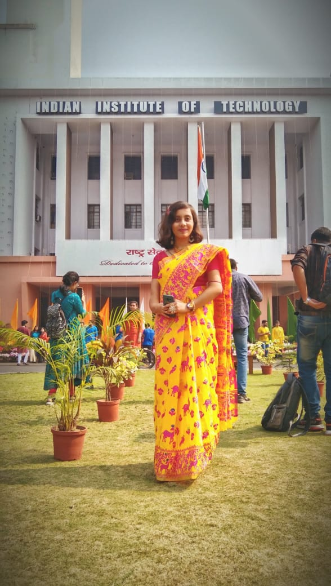
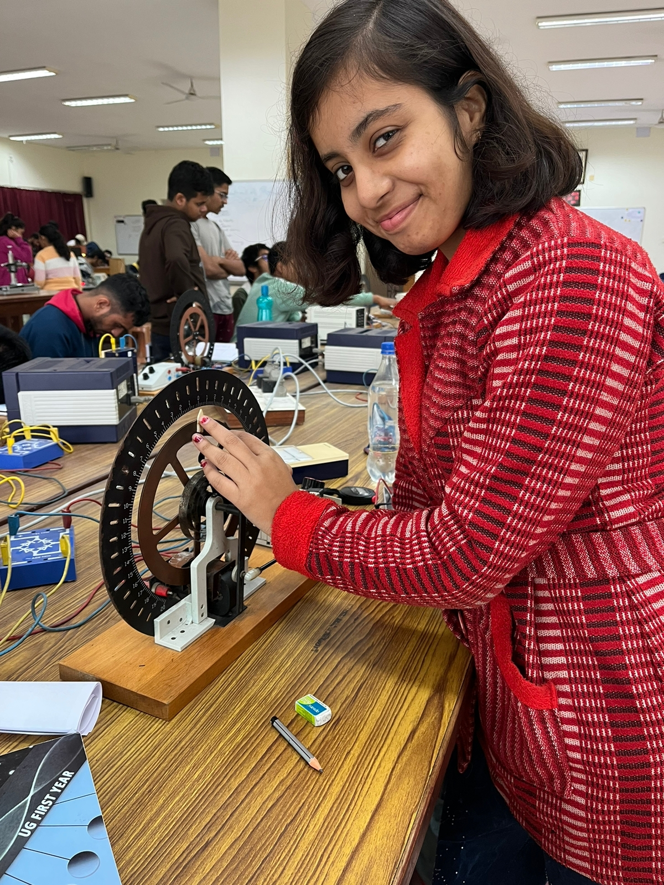
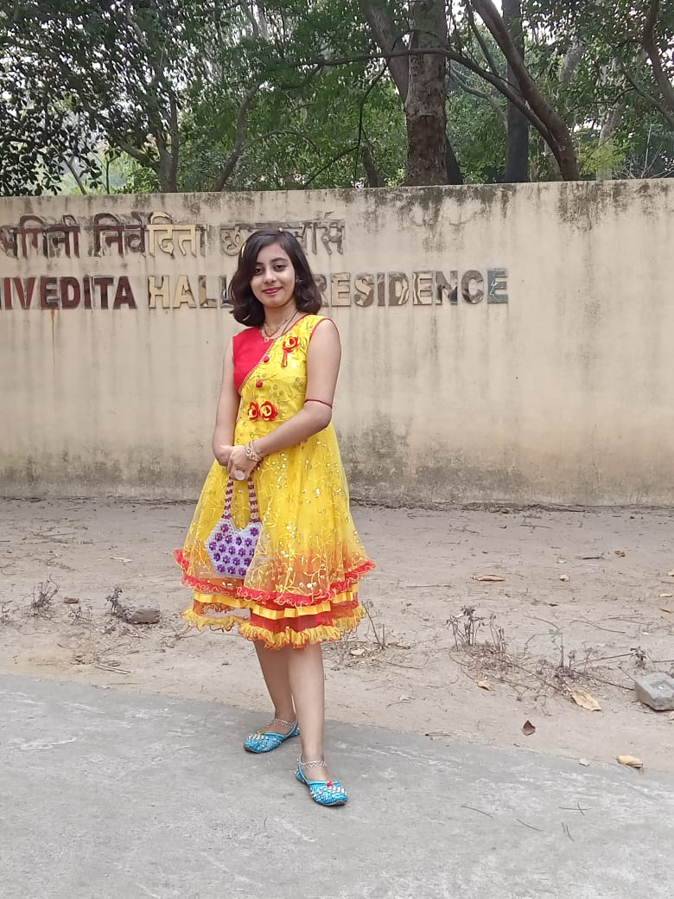

In 1946, a committee by Sir Jogendra Singh, Member of Viceroy's executive council, to consider the creation of higher technical institutions "for post-World War II industrial development of India". This was followed by the creation of a 22-member committee headed by Nalini Ranjan Sarkar. In its interim report, the Sarkar Committee recommended the establishment of higher technical institutions in India, along the lines of the Massachusetts Institute of Technology and consulting from the University of Illinois at Urban Champaign along with affiliated secondary institutions. The report urged that work should start with the speedy establishment of major institutions in the four-quarters of the country with the ones in the east and the west to be set up immediately
Some places in IIT Kharagpur



IIT Main Building where all the administrative and official works are authentiated.It also includes the CENTRAL LIBRARY
PHYSICS LABORATORY in nearby the Vikramshila Complex.Doing the Pohl's pendulum
My Hall where I stay 'Sister Nivedita Hall of Residence'.We are currently staying in INTERNATIONAL GUEST HOUSE having ambient facilities.